Impact
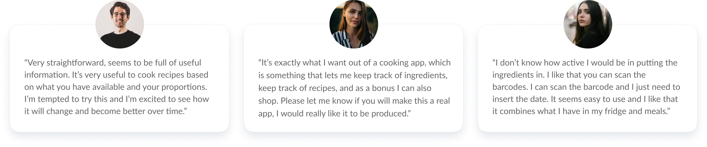
Solution
Barcode scan & manual import
- To provide users with a better overview of available food, they have the option to add ingredients they have at home to the virtual fridge.
- Users can either add ingredients manually or scan a barcode with the option to edit expiry dates and quantities of food items.
- To help them use up available food, users are notified about expiring items.
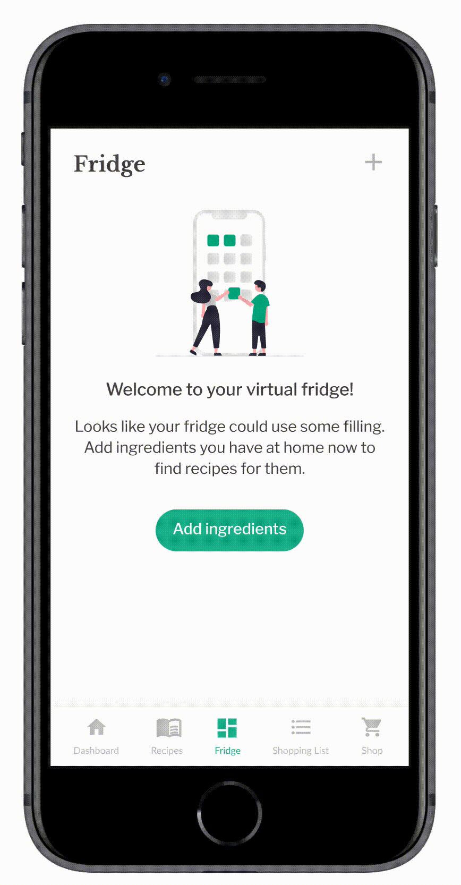
Recommendations & favorites
- Based on food items added to the fridge and dietary preferences, user can browse through a recommended selection of recipes. To prevent overwhelming users with choices, content has been categorized and choices have been limited.
- Filters allow users to find recipes based on time, difficulty, and diet. Users also have the option to save recipes they liked to access them later.
- To help them use up available food, users are notified about expiring items.
Tutorials & tips
- To provide users with an engaging experience, recipes can be followed in video format or as step-by-step tutorials in simple language.
- A tips section has also been added to find alternative ways of cooking for better meal outcomes.

Adjust units easily
- Converting units and servings by hand is a tedious process. To provide a simple solution for this, adjusting proportions is now as simple as clicking a button.
- The ingredients list gets updated automatically and users can easily prepare their meals with units in their corresponding metric system.

Missing ingredient recognition
- To save time shopping for ingredients, users have the option to buy missing ingredients through an integrated shop.
- Available and missing ingredients are recognized by the system based on the food inventory in the fridge. Users can either add missing items to a shopping list or buy them right away.
Quick checkout & delivery
- For a frictionless checkout process, steps have been reduced. After buying the item, users can also view their recent orders and current delivery status on their dashboard.

Analyzing the Competition
I started off by reviewing 6 existing apps in combination with a customer review analysis to understand the market and identify opportunities for Savly.
Given the saturation of recipe apps, I evaluated products based on 7 categories: strengths, weaknesses, content, visual design, UX, compatibility, and opportunities.
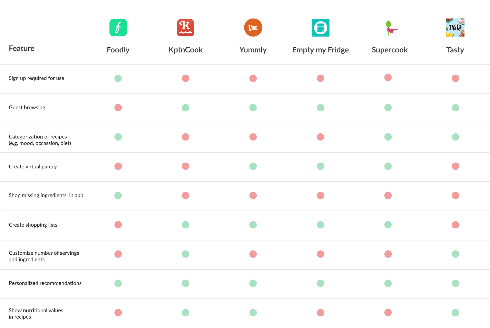
Opportunities for Savly
- Recommended recipes based on user’s diet and expiring food items
- Video tutorials
- Customize the number of servings
- Select food restrictions in onboarding
- Shop ingredients in the app
User Research
Survey
Next, I conducted user research by fielding a survey to 172 participants on Slack and Reddit over three days.
The goal was to understand the make-up of my target audience, learn more about the context of use, and get some broad insights into cooking behavior and food waste habits.
The survey was suitable because I was able to gather broad insights first before exploring specific user needs and pain points in interviews later on.
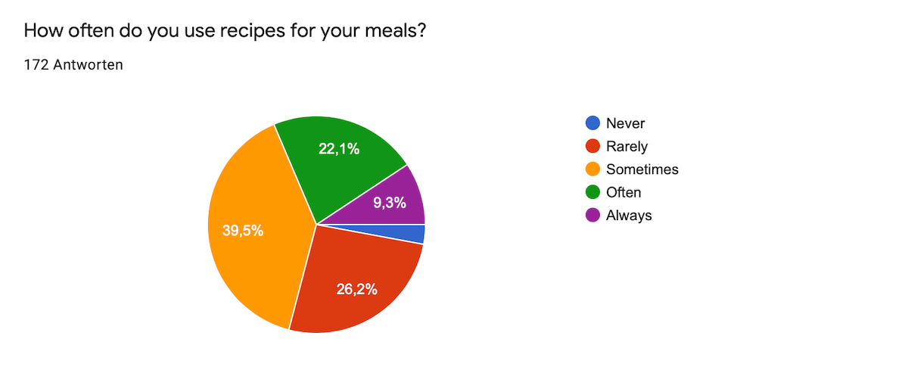
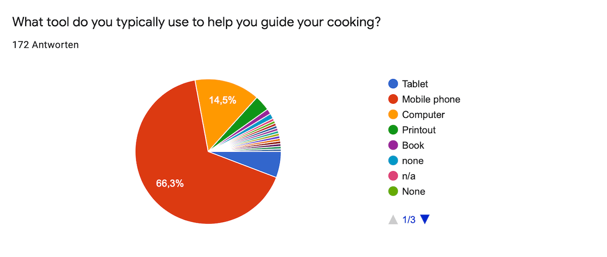
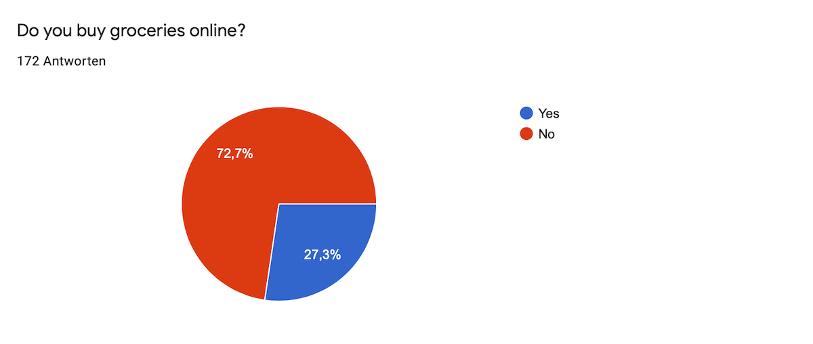
Survey Results
- Our main target audience are 25-34 year-old professionals who live in 1-2 person households and mainly follow recipes on their mobile phones.
- Over 70% use recipes to prepare their meals. The main source for finding recipes are websites and cooking blogs, mostly accessed through a google search. Although they use their phones to read recipe directions, mobile apps are rarely used for recipe discovery.
- A surprising majority (72.7%) of users does not buy groceries online.
- When it comes to food waste, 70.9% of users tend to throw out small amounts of unused food per week. The main cause for this is loosing track of food expiry dates.
Definition of the target audience & product requirements
Survey results helped me narrow down the primary target audience to seek out for user interviews next. They also led to defining product requirements to build a responsive web app with a mobile-first approach that would be accessible through the browser, as this is the main way users like to discover recipes and follow recipe directions.
User Interviews
Next, I recruited and interviewed 7 professionals to gain a better understanding of food tracking, task flows, common obstacles and pain points when cooking recipes with digital products, and to explore use cases for online grocery shopping.
The recruitment process involved finding potential users on Slack and Reddit and asking friends. Participants needed to be professionals who have used recipe apps/websites to guide their cooking to qualify for the study.
Key Findings
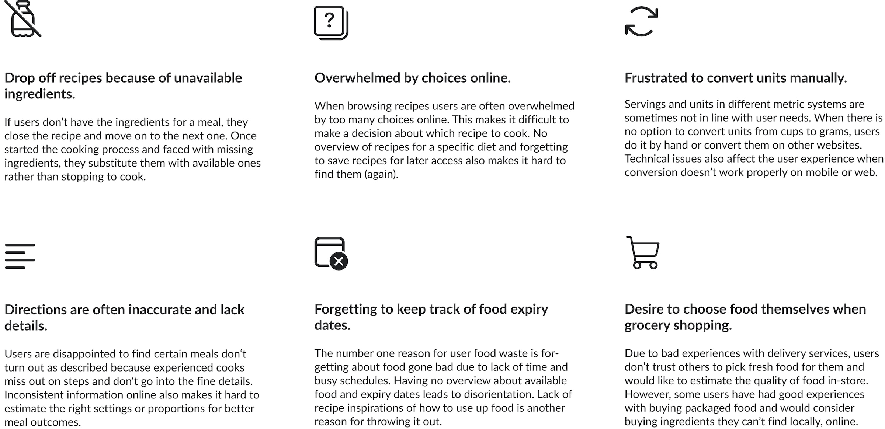
Empathizing with the User
Next, I used my research findings to create personas to empathize with user’s needs, goals, and frustrations. As a reference throughout the project, they helped me to stay on track and make design decisions with end-users in mind.
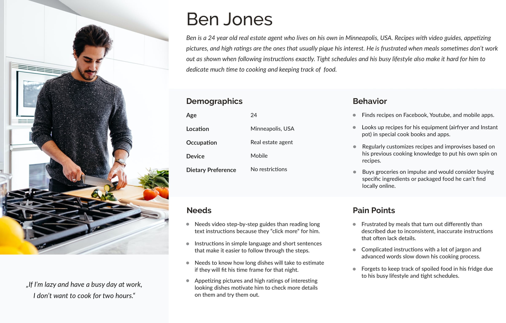
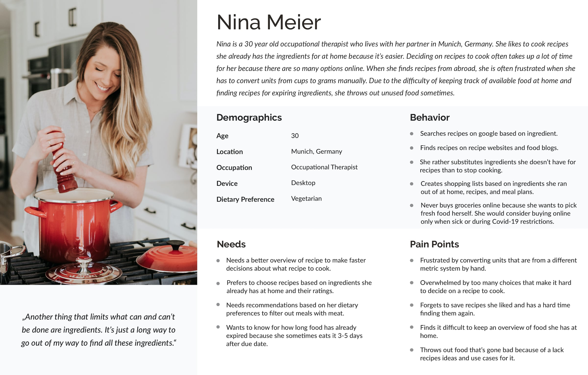
Prioritization of Features
To translate insights into requirements, I first brainstormed as many HMW statements as possible. Afterwards, I prioritized the most important ones in an impact-effort matrix to narrow down the scope for the MVP.
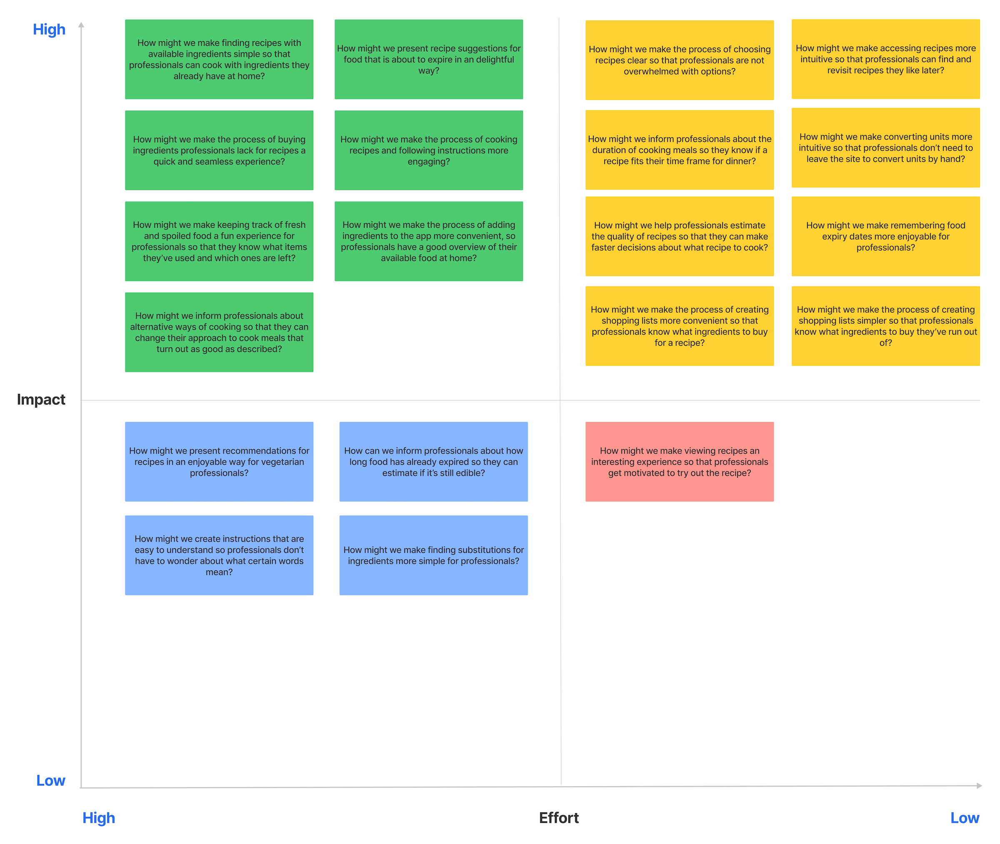
Mapping Out the Journey
After the prioritization of features, I created user journey maps to visualize the process Ben and Nina need to go through to accomplish their goals in Savly.
Nina's Journey: Nina found some grated cheese in the fridge that will expire soon. She wants to use it to cook a meal but has no idea what to make of it. She will use Savly to find a recipe for grated cheese to prepare a dinner for two.
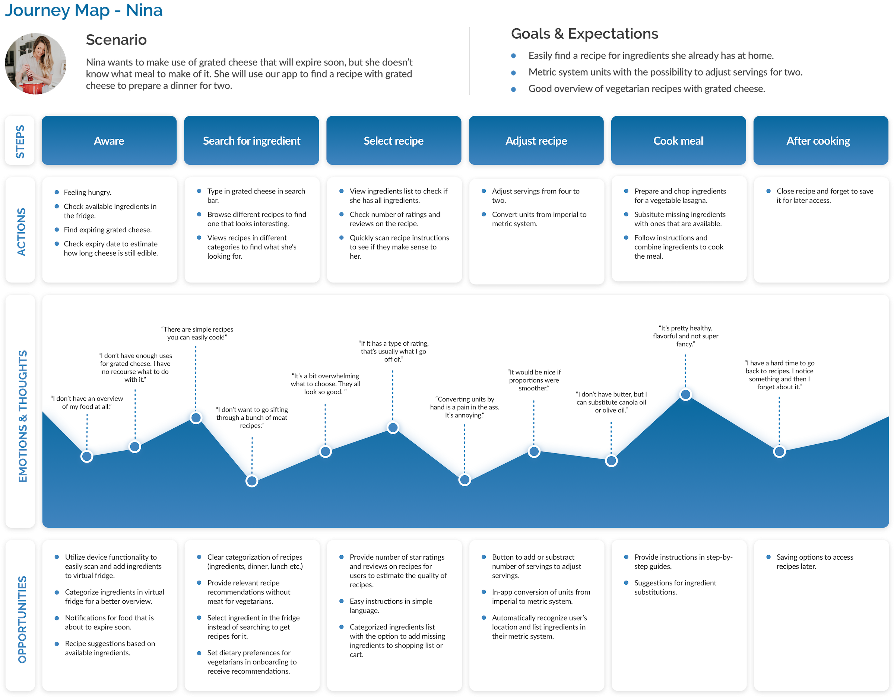
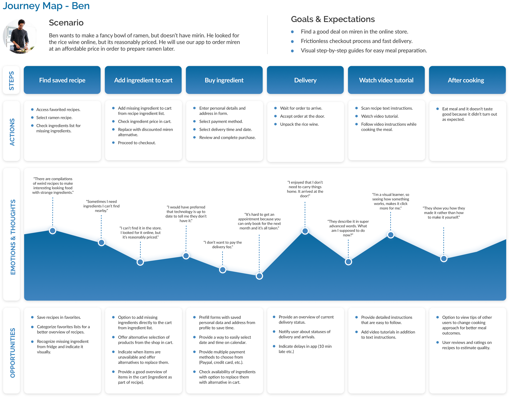
Prioritized features based on journey maps
- Sign up & onboarding
- Search for recipe for available ingredient
- Adjust recipe servings and units
- Follow directions and save the recipe to favorites
- Add missing ingredient to the cart
- Buy missing ingredient through the app
User Flows
Using the journey maps and personas as a guide, I created user flows to understand the specific tasks Ben and Nina would need to do and the pages needed to complete them in the app.
User flow for cooking a recipe
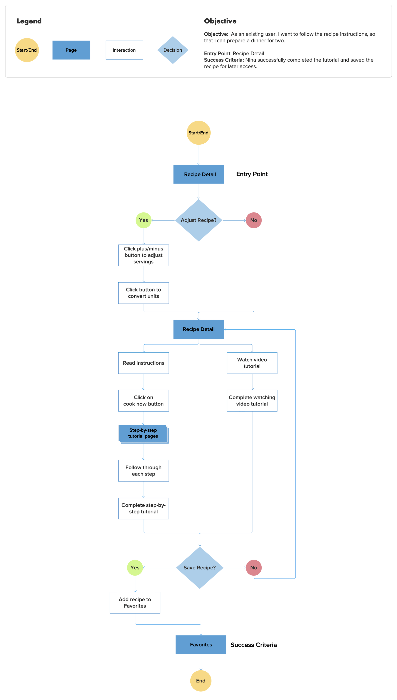
Information Architecture
Using user flows and journey maps, I created an initial sitemap to structure web app pages hierarchically.
The challenge here was to determine which pages allowed for guest access and which required users to sign-up. My goal was to identify key pages that would create enough instant value for users to encourage them to explore the app further.
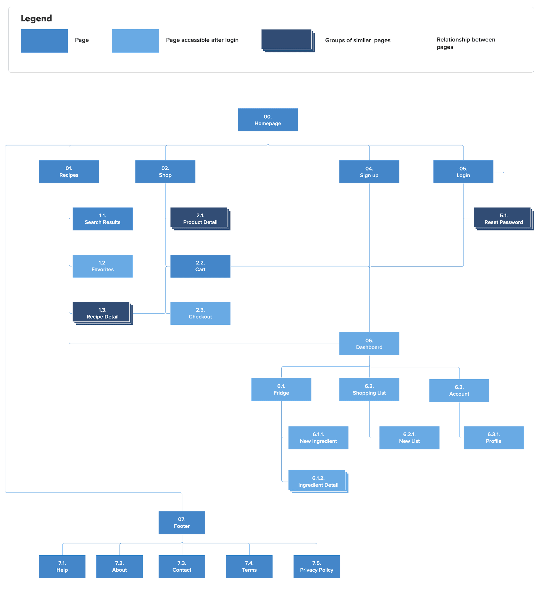
Exploring possible solutions
Next, I worked on several iterations to experiment with different layouts on the homepage, recipe page, and onboarding methods, as the first solution wasn't always the best.
Afterwards, I created mid-fidelity wireframes and a prototype in Figma to test my design with real users in the upcoming phase.
Low-Fidelity Wireframes
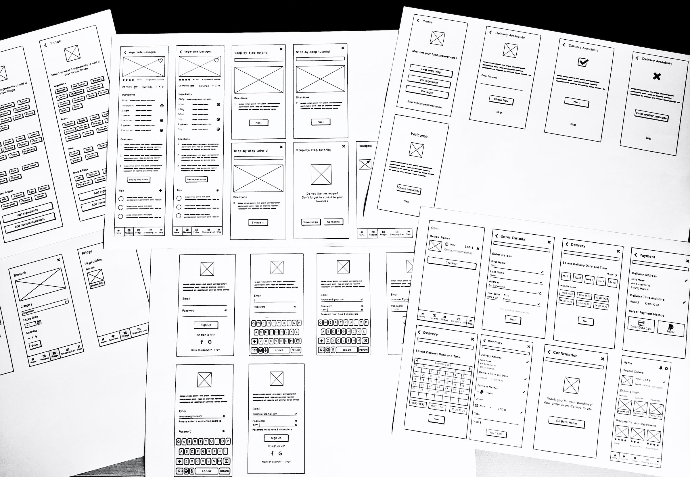
Mid-Fidelity Wireframes
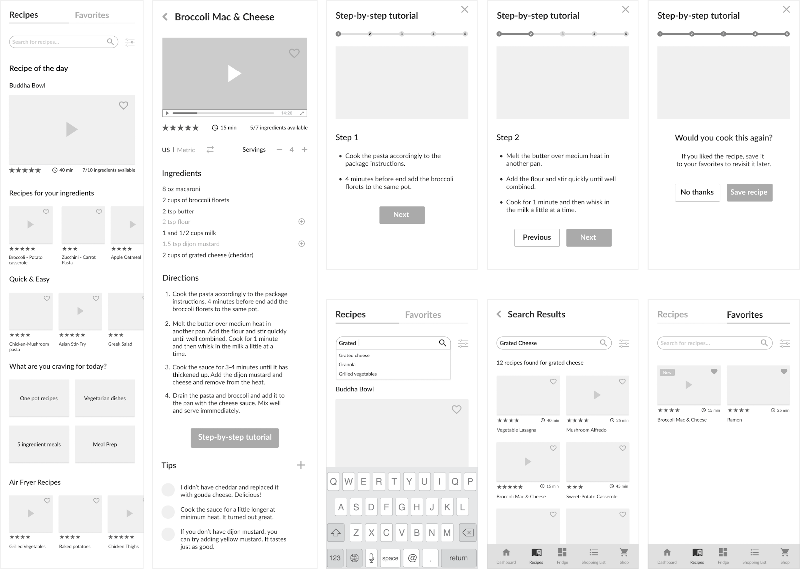
Usability Testing
To assess learnability and errors for first-time users, I conducted moderated remote usability tests with 5 participants via Google Meet.
I wanted to know whether users understand the app and its value and can complete basic tasks such as finding a recipe or buying ingredients through the app.
Metrics
- Success rate and time on task to assess learnability.
- Severity of errors is measured by Jakob Nielsen’s rating scale.
- Net promoter score to gauge satisfaction by asking users how likely it is that they would recommend the app to a friend or colleague on a scale from 0-10.
Recruitment
Recruitment was done by following up with persona users from interviews, asking friends who fit the recruitment criteria, and posting on Slack.
Test Results
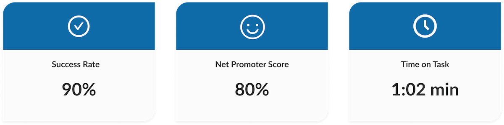
Overall, the feedback was mostly positive, but the test results also brought some critical issues to light. The main sources of confusion were task 2 (searching for a recipe using available ingredients), the lengthy onboarding process and data entry during the checkout process.
Issue 1: Couldn’t find recipe for available ingredient (Severity: 4)
2/5 participants struggled to find recipes for grated cheese, assuming it had to be added to the fridge first. They browsed recipe categories instead of using the overlooked search bar.
To address this, I enabled adding items to the fridge with a plus button and included copy and a button for users to find recipes for their fridge ingredients more easily.
Issue 2: Onboarding is too long (Severity: 3)
2/5 users found the onboarding process too lengthy and were uncertain about adding ingredients to the fridge, feeling it was too early for them. The fridge concept was also not clear from the homepage.
To solve this, I removed the ingredient addition from onboarding and postponed it to a later stage. Users can now access the fridge page after onboarding to add ingredients for recipe suggestions. I also added images of recently added items to clarify the fridge concept on the homepage.
Solution for Issue 1 & 2
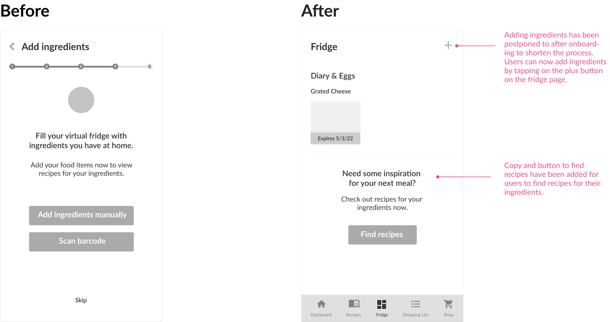
Issue 3: Entering personal data during checkout (Severity: 3)
2/5 users found the checkout process with PayPal confusing and frustrating due to the need to enter personal data. They expected their data to be saved and prefilled.
Users also wanted a PayPal checkout option on the cart page to shorten the process. In addition, users noted missing details like delivery costs, food item quantity selection, and price visibility at each step.
To improve this, I integrated the PayPal button and delivery time selection in the cart, reducing the checkout process from 5 to 2 steps and adding the necessary information for transparency.
Solution for Issue 3
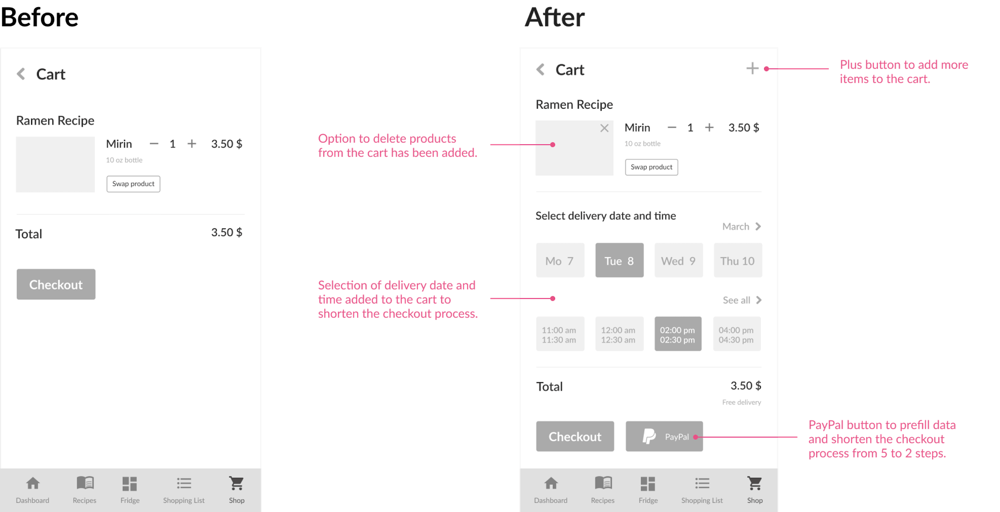
Visual Design
After issues had been fixed, I moved on to bring Savly to life with visuals. As Savly is content-heavy, I aimed for a minimal and modern design to highlight images. I chose green as an accent color to emphasize the freshness of dishes.
As a number of people mentioned in the survey that they still use books and handwritten recipe cards, I chose Libre Baskerville to evoke the feel of vintage cookbooks, pairing it with Libre Franklin for a modern touch.
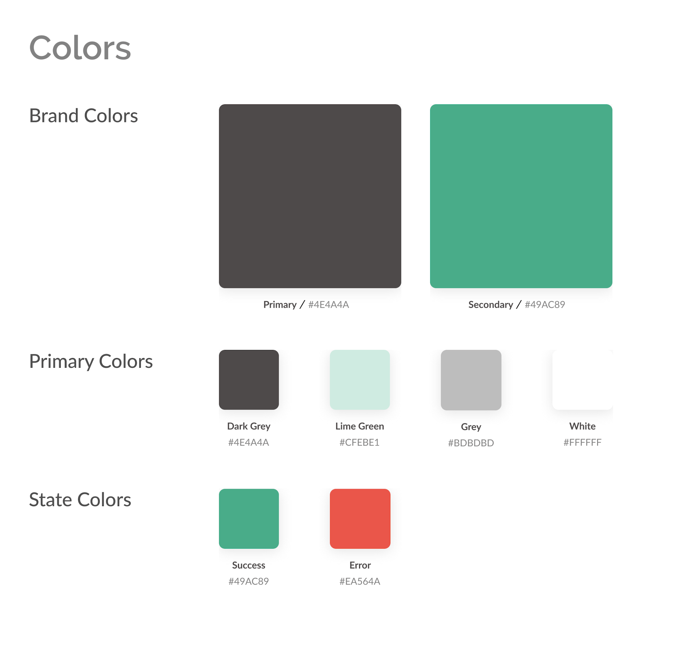
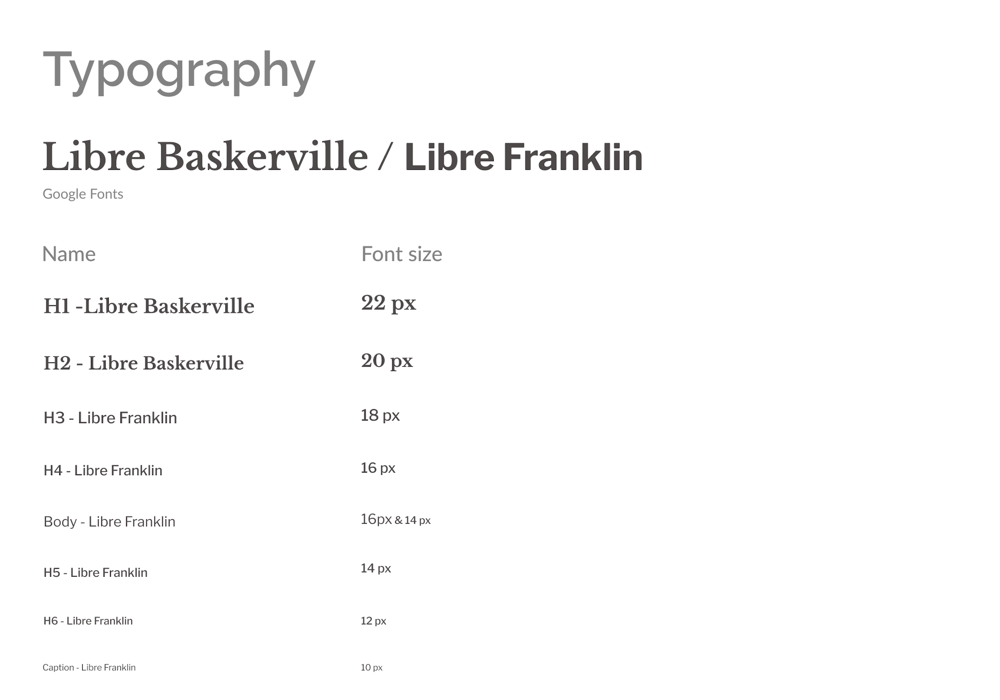
Responsive Design
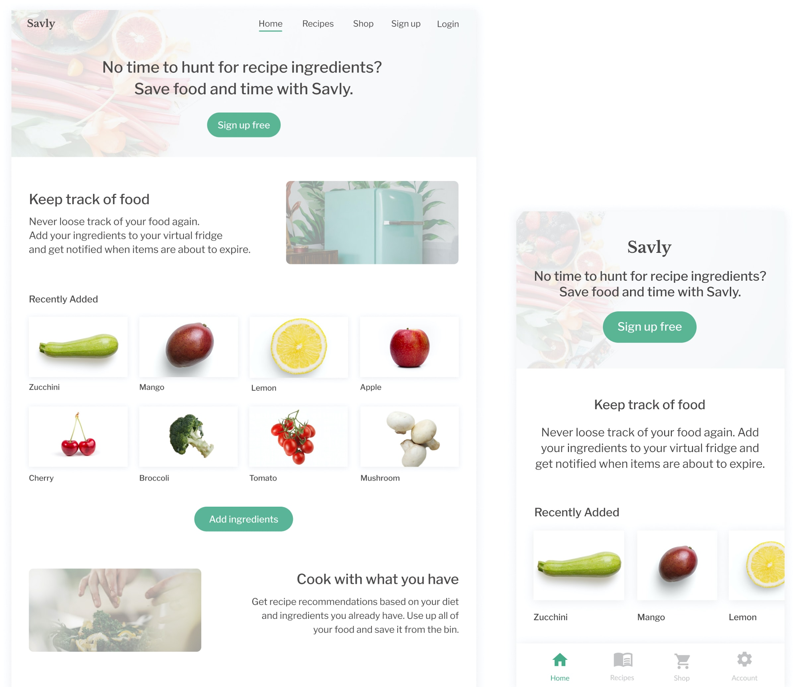
Mockups
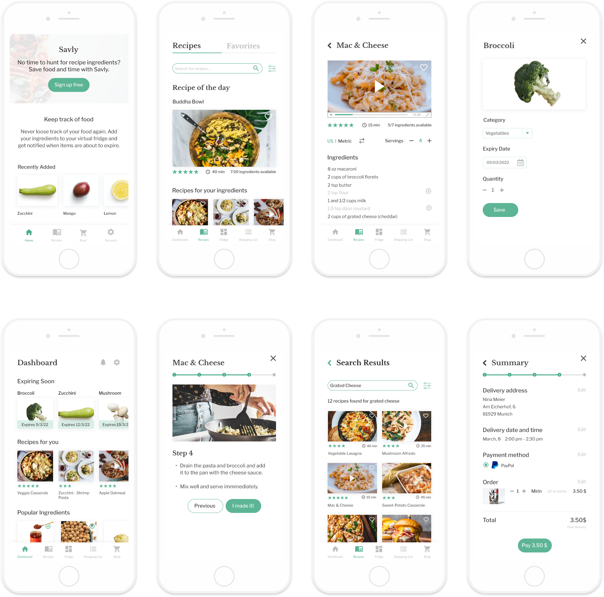
View Prototype
After having implemented user testing feedback and the visual design, I finalized the prototype using Figma. Feel free to interact with the prototype to see how it works.
Learnings
Conducting broad surveys and then narrowing the focus through user insights and prioritisation helped me to identify essential features of the MVP. Setting myself constraints also taught me to arrive at a solution that could benefit both user and business needs.
If I had more time, I would carry out a card sort to improve navigation and conduct user tests on the high-fidelity prototype. Next steps for the project also include creating a delivery flow to track updates and a feature to select multiple ingredients in the fridge to find recipes for them.